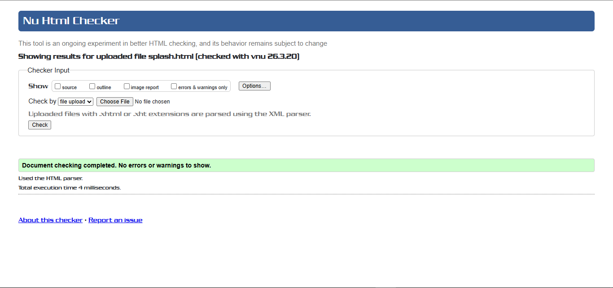
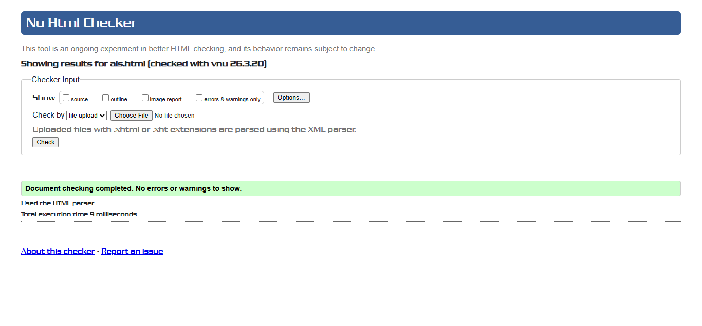
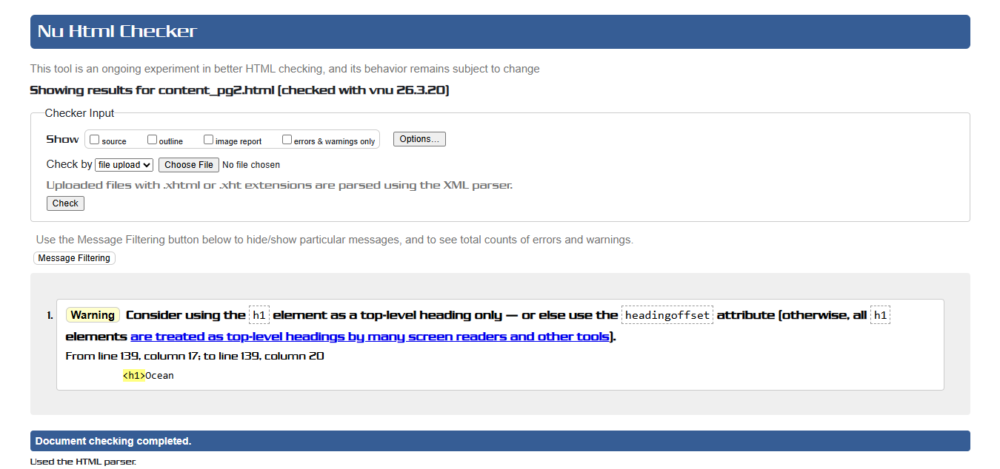

Splash Screen validation report
The splash screen page was validated using the W3C HTML Validator and the results showed that the overall structure is well-formed and follows HTML5 standards. The page successfully implements animations, a countdown timer, and automatic redirection. Overall, the validation process confirmed that the page is functional, visually effective, and close to fully compliant with web standards.

Back to Page Editor page
Include a link back to the corresponding section of the Page Editor.
Action Impact Simulator Page validation report
The Action Impact Simulator page was tested using the W3C HTML Validator to ensure proper structure and standards compliance. The validation report showed that the page is mostly well-structured and functional. Despite these minor issues, all interactive features, including the dynamic score calculation, card selection, and reset functionality, work correctly. The use of semantic elements improves accessibility and structure. Overall, the validation process confirmed that the page is functional and well-designed, with only minor improvements needed to fully meet best practices.

Back to Page Editor page
Include a link back to the corresponding section of the Page Editor.
Content Page validation report
The content page was validated using a standard HTML validation tool to check for structural and semantic correctness. The results indicated that the page is largely error-free and follows proper HTML5 conventions. The page makes effective use of semantic elements and headings to organise content clearly. All images include descriptive alt attributes, improving accessibility. The layout is responsive and displays correctly across different screen sizes. Overall, the validation process confirmed that the page is well-structured, informative, and aligned with modern web development practices.

Back to Page Editor page
Include a link back to the corresponding section of the Page Editor.